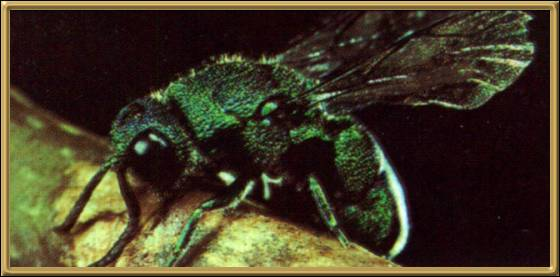

Photographer: Unknown
This is a very beautifully colored wasp, but it is also a very lazy one! Its name comes from its habit of laying its eggs next to another wasps eggs because it is too lazy to find its own food and home - just like the cuckoo bird it was named after!